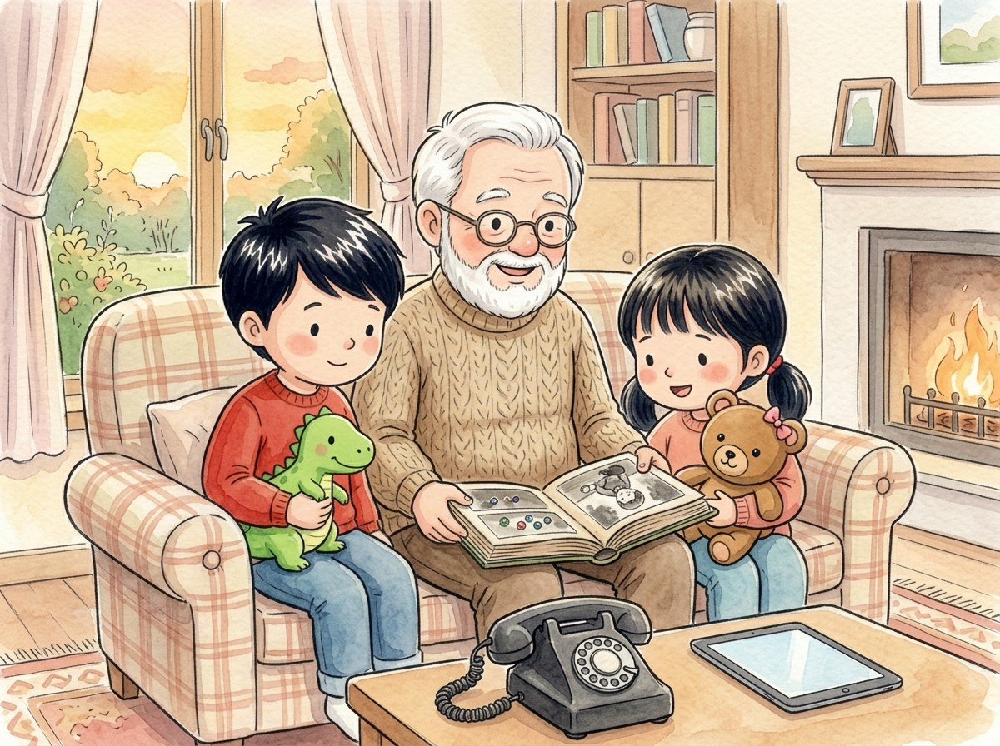

Kindergarten · Estudios sociales · SS.K.H.1
Cuando el abuelo era niño
Un cuento sobre cómo era la vida antes y cómo es ahora.
Tres palabras nuevas
En un tiempo que ya pasó.
En este momento, hoy.
Todo lo que ocurrió hace tiempo.
Toca un dibujo para oír la palabra y qué significa.
El cuento
El abuelo saca un álbum de fotos muy viejo.
—Este soy yo cuando tenía cinco años, como ustedes —dice.
En la foto, el abuelo juega con canicas en la calle.
—Antes no había tabletas. Jugábamos con canicas, trompos y pelotas.
—¿Y cómo hablabas con tu abuela? —pregunta Génesis.
—Con un teléfono que tenía un cable y una ruedita para marcar —se ríe el abuelo.
Ahora Adrián habla con su tía por la tableta, ¡y hasta la ve!
Algunas cosas cambiaron. Otras siguen igual: a los niños les sigue gustando jugar a la pelota.
Las fotos y las historias del abuelo nos enseñan el pasado.
Esa tarde, el abuelo les enseña a jugar canicas.
Preguntas
Escucha la pregunta y toca el dibujo correcto.
-
Pregunta A. ¿Con qué jugaba el abuelo cuando era niño?
Antes no había tabletas: el abuelo jugaba con canicas, trompos y pelotas.
-
Pregunta B. ¿Cómo era el teléfono de antes?
El teléfono de antes tenía un cable y una ruedita para marcar.
-
Pregunta C. ¿Cómo habla Adrián con su tía ahora?
Ahora Adrián habla con su tía por la tableta, y hasta la ve.